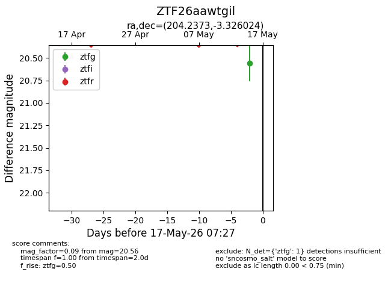
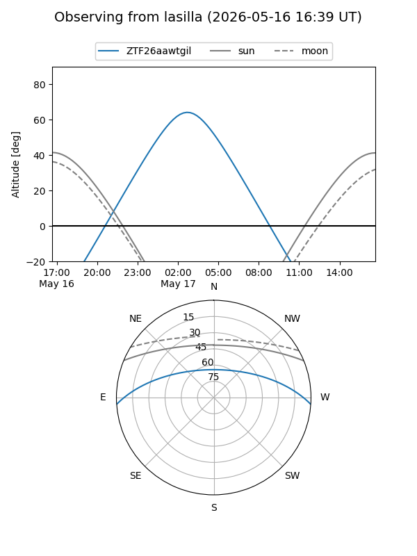
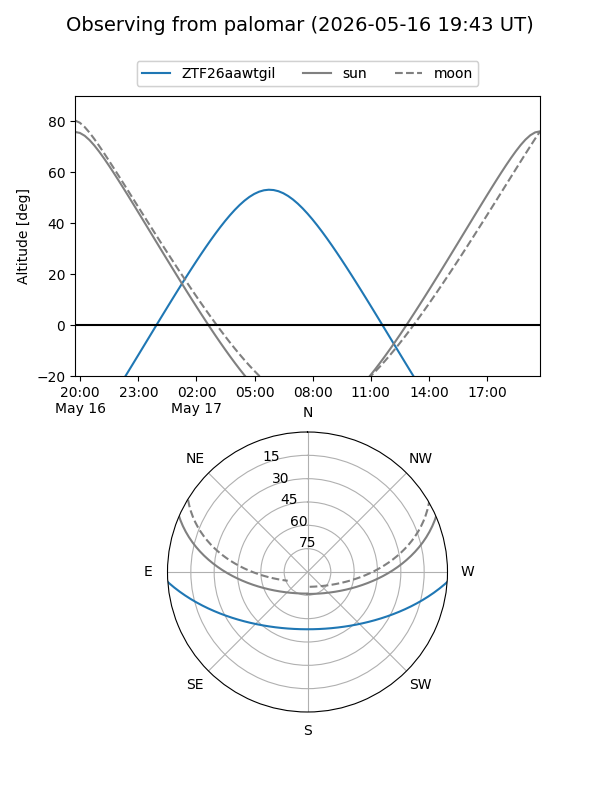

ZTF26aawtgil
Target ZTF26aawtgil at 2026-05-17 07:29
Aliases and brokers:
FINK: link
Lasair: link
ALeRCE: link
alt names
ZTF26aawtgil (ztf,fink_ztf)
Coordinates:
equatorial (ra, dec) = 204.2373,-3.32602
equatorial (HMS+DMS) = 13:36:56.94,-03:19:33.69
galactic (l, b) = (324.5131,+57.62623)
Flags:
Photometry:
last ztfg=20.56
1 ztfg detections
Lightcurve

Visibility


Additional plots